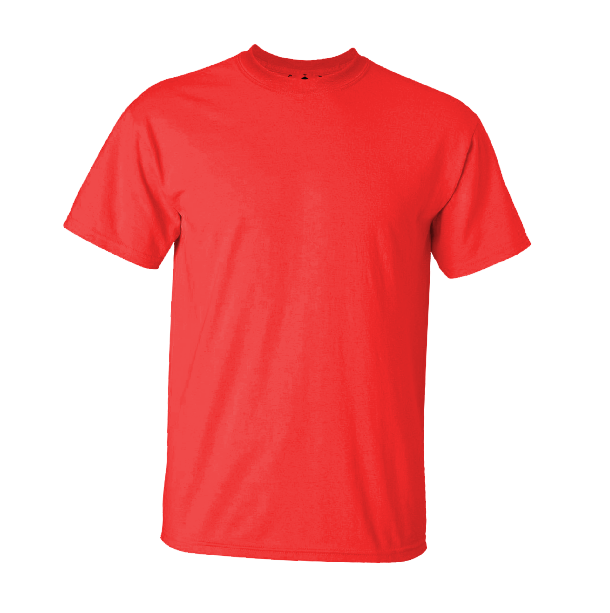
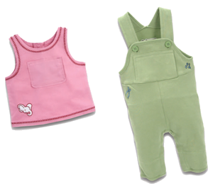
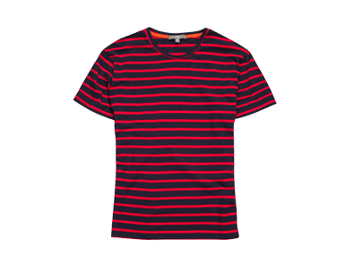
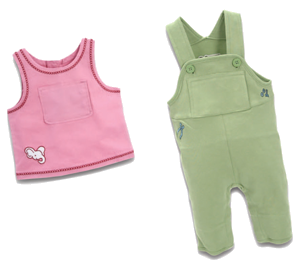
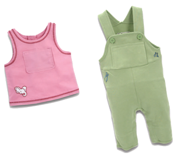
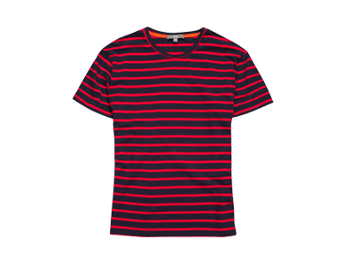
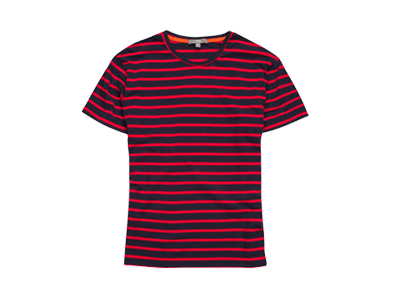

GREAT JOB! You can reuse clothing by donating them to Goodwill, and other second-hand clothing stores.



Reusing clothing is a great way to help save the environment.
Second-hand clothing is less expensive to purchase since it has already been worn; in short, it is cost-effective.
Reusing clothing also reduces the production of making new clothing;
less resources, like cotton, will be used to make these goods.
If less clothing is being made, less porducts are being transported by trucks, ships, and planes that pollute the air.
 

 
